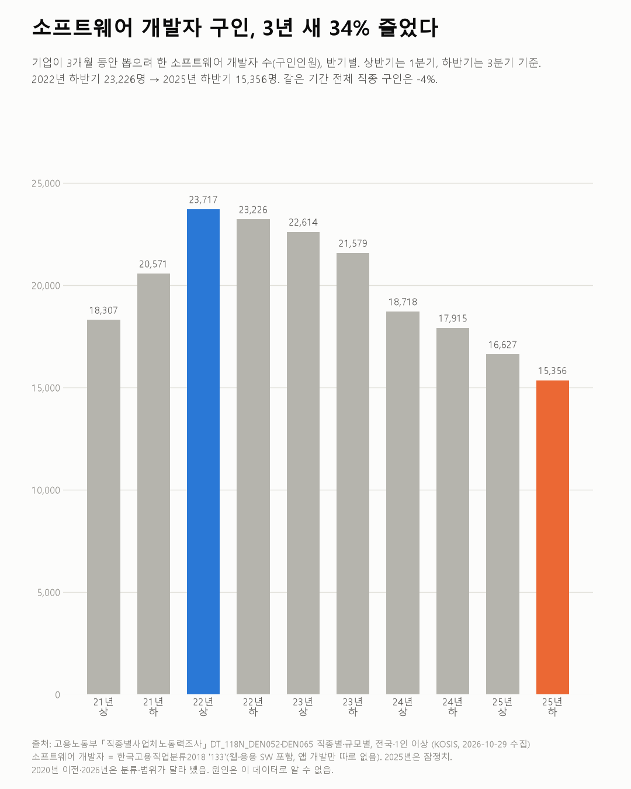
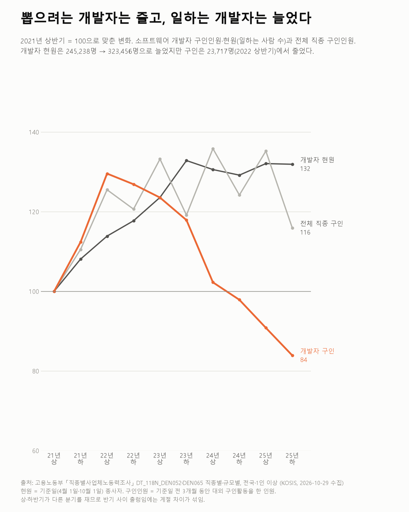

소프트웨어 개발자 구인, 3년 새 34% 줄었다
직종별사업체노동력조사 2021~2025

질문
기업이 소프트웨어 개발자를 뽑으려는 규모(구인인원)는 2021년부터 2025년까지 어떻게 바뀌었나? 전체 직종과 비교하면?
사용 데이터와 출처
| 데이터 | 출처 | 쓰임 |
|---|---|---|
| 직종별·규모별 (KOSIS DT_118N_DEN052 2021~2023, DT_118N_DEN065 2024~2025) | 고용노동부 「직종별사업체노동력조사」 | 전국·1인 이상 사업체의 직종별 현원·구인·채용인원, 반기별 |
- 반기마다 조사한다. 상반기는 4월 1일, 하반기는 10월 1일 기준이다.
- 구인인원: 기준일 전 3개월(상반기는 1분기, 하반기는 3분기) 동안 대외적으로 구인활동을 한 인원. 채용인원: 같은 3개월 동안 채용이 확정됐거나 채용된 인원.
- 소프트웨어 개발자: 한국고용직업분류 2018의 133. 웹·응용 소프트웨어 개발자가 함께 들어 있고 앱 개발자만 따로 나뉘지 않는다.
- 2021~2025년은 같은 직종 분류(2018)다. 2019년 이전과 2026년부터는 분류가 달라 잇지 않았다.
- 검증: 대분류 합과 중분류 합이 '전직종' 행과 같은지(0.5% 이내) 모든 반기에서 확인했다.
- 교차 확인: 2025년 하반기 전직종 구인인원은 KOSIS 121.4만 명, 보도(2025년 12월) 120.6만 명으로 0.6% 차이다. 2025년 값은 잠정치라 발표 뒤 고쳐진 것으로 보인다. 보도된 '전년 대비 −7.0%'로 역산한 2024년 하반기 값(129.7만 명)은 KOSIS 값(130.0만 명)과 맞는다.
- 수집일: 2026-10-29 (KOSIS 오픈API).
인사이트
1. 소프트웨어 개발자 구인인원은 2022년 상반기 23,717명이 가장 많았고, 그 뒤 반기마다 줄었다. 2025년 하반기는 15,356명이다. 3년 전 같은 반기(2022년 하반기 23,226명)보다 34% 적다.
2. 같은 기간 전체 직종 구인인원은 4% 줄었다. 개발자 구인이 줄어든 폭이 전체보다 훨씬 크다.
3. 일하는 개발자 수(현원)는 늘었다. 2021년 상반기 24.5만 명에서 2023년 하반기 32.6만 명까지 늘었고, 그 뒤 32만 명 안팎이다. 현원 100명당 구인인원은 2022년 상반기 8.5명에서 2025년 하반기 4.7명이 됐다.
4. 개발자는 뽑으려 한 만큼 다 뽑지 못하는 비율이 전체보다 높다. 구인인원 중 채용된 비율이 2025년 하반기 개발자 77.7%, 전체 직종 91.6%다. 2022년에는 개발자가 71~73%로 더 낮았다.

한계
이 데이터로 말할 수 없는 것
- 3개월 동안의 구인만 잰다. 상반기는 1분기, 하반기는 3분기만 본다. 1년 전체 구인 규모가 아니다. 그래서 같은 반기끼리 비교했다.
- 2020년은 뺐다. 2020년에서 2021년으로 넘어갈 때 전체 직종 현원이 1,252만 명에서 1,676만 명으로 한 해에 34% 늘었다. 표 주석에는 설명이 없지만, 조사 범위나 방법이 바뀐 것으로 보여 같은 기준으로 보지 않았다.
- 앱 개발자만 따로 볼 수 없다. 133 소프트웨어 개발자에는 웹·응용 소프트웨어 개발이 함께 들어 있다.
- 2025년은 잠정치다. 나중에 고쳐질 수 있다.
- 구인이 줄었다는 것이 일자리 수가 줄었다는 뜻은 아니다. 현원은 오히려 늘었다. 새로 뽑으려는 규모가 줄었다는 뜻이다.
- 원인은 말하지 않는다. 경기, 금리, 투자, AI 도구, 기업 실적 등 이유는 이 데이터로 알 수 없다.
전제 기록
데이터를 보기 전에 적어둔 것, 그리고 보고 나서 바꾼 것
- 전제 기록(premises)(데이터를 받기 전에 작성)를 따랐다.
- 받은 뒤 바뀐 점: 전제에서는 2020년부터 잇기로 했지만, 전체 현원이 한 해에 34% 뛰어 2021년부터만 썼다(전제 3의 확인 결과).
- 기간 구분은 반기(H), 기간 코드는 YYYY01(상반기)·YYYY02(하반기)다.